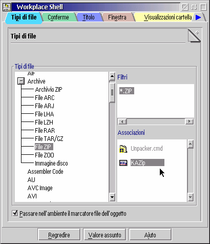

Come impostazione predefinita la WPS associa i programmi ai file di dati usando due distinti meccanismi: le "associazioni per tipo di file" e le "associazioni per filtro".
Abilitando le associazioni estese di &xwp; resteranno disponibili solo le associazioni per tipo di file.
Per•, dato che la maggior parte dei file non ha un tipo esplicito associato (che si imposta dalla pagina "Tipo" nel blocco impostazioni del file), &xwp; assegner… automaticamente ai file il tipo file pi— adatto, in base ai filtri definiti. In questo modo si ottiene il meglio di entrambi i sistemi (tipi di file e filtri file) ed in maniera pi— logica.
Dove sta il vantaggio?
Prima di tutto, il meccanismo standard di associazione di WPS Š scomodo se vengono aggiunte associazioni in accordo contemporaneamente a tipi e filtri. Il nuovo approccio Š da questo punto di vista pi— logico.
In secondo luogo, pi— importante, &xwp; permette di definire gerarchie di tipi di file. Per esempio, ci sono molti tipi di file che in realt… sono anche "testo semplice" (Plain Text), per esempio i tipi "C Code" o "HTML": Š pratico che l'editor normalmente impostato per leggere il "testo semplice" sia associato anche a questi altri tipi di file.
Finora era necessario associare lo stesso editor a tutti questi tipi di file. Con &xwp;, Š ora possibile definire un tipo come "sotto-tipo" del tipo "testo semplice", e quel sotto-tipo erediter… le associazioni definite per il tipo genitore.
Le associazioni si definiscono con la nuova pagina "Tipi di file", nell'oggetto "Workplace Shell" (se le associazioni estese sono state abilitate):

Per definire gerarchie di tipi di file si trascinino i tipi di file
nell'albero "Tipi di file" su un altro tipo di file.
&xwp; permette di importare i vecchi filtri nelle nuove
associazioni. Per fare questo si clicchi con il tasto destro del mouse nel campo "Filtri" e si
selezioni "Importare filtri WPS...".